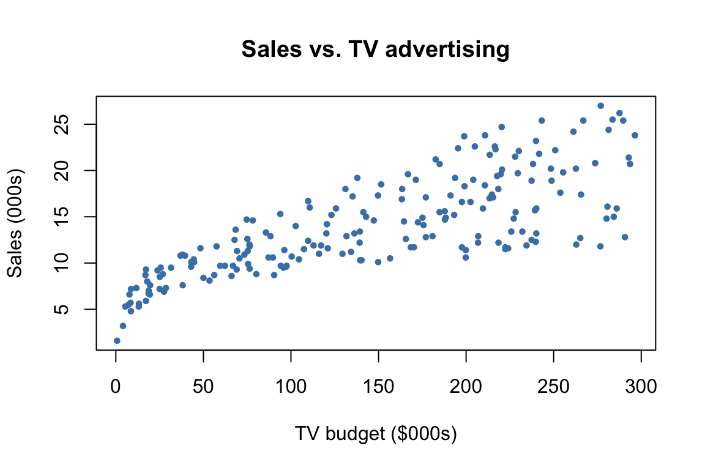

Acknowledgement: Much of this material is borrowed from chapter 3 of the book Introduction to Statistical Learning with R (ISLR).
We will work with the Advertising dataset from ISLR. It records sales (in thousands of units) alongside advertising budgets (in thousands of dollars) for TV, radio, and newspaper across 200 markets.
Is there a relationship between advertising budget and sales? If the evidence is weak, then one might argue that no money should be spent on advertising!
Are all three media (TV, radio, and newspaper) associated with sales, or are just one or two of them? To answer this question, we must find a way to separate out the individual contribution of each medium to sales when we have spent money on all three media.
For every dollar spent on advertising in a particular medium, by what amount will sales increase? How accurately can we predict this?
How adequate is the linear model for the relationship between sales and different media?
50 Problem 1: Exploring correlations
Before fitting any model, we should always look at the data.
(a) Compute the correlation between each advertising channel and sales. Which of these is most strongly linearly associated with sales?
# use cor()
TV has the strongest linear association with sales (\(r \approx 0.78\)), followed by radio (\(r \approx 0.58\)). newspaper shows a weaker correlation (\(r \approx 0.23\)).
(b) The correlation coefficient is always between \(-1\) and \(1\) and is defined as \[r = \frac{1}{n-1} \sum_{i=1}^n \left(\frac{x_i - \bar{x}}{s_x}\right)\left(\frac{y_i - \bar{y}}{s_y}\right).\] What does the sign tell you? What does the magnitude tell you?
The sign gives the direction of the association, it answers whether an increase in \(x\) is associated with an increase or decrease in \(y\). The magnitude reflects how tightly the points cluster around a line: \(|r| = 1\) means perfect linear association, \(r = 0\) means no linear association.
51 Problem 2: Simple linear regression
51.1 Fitting the model
We regress sales on TV advertising budget alone.
# Use lm and summary# model_tv <-
(a) Write out the fitted model. Interpret the slope.
Recall that sales is in thousands of units, and TV budget is in $1,000. Thus, the model fitted above tells us that: For every additional $1,000 spent on TV advertising, sales increase by about 47.5 units. The intercept (7,033 units) is the predicted sales when TV budget is zero.
plot(Advertising$TV, Advertising$sales,col ="steelblue", pch =19, cex =0.6,xlab ="TV budget ($000s)", ylab ="Sales (000s)",main ="Sales vs. TV advertising")

# abline(model_tv, col = "tomato", lwd = 2)
51.2 Deriving the OLS estimates
The least squares estimates minimize the residual sum of squares \(\text{RSS} = \sum_{i=1}^n (y_i - \hat{y}_i)^2\). Using calculus, this yields the following closed forms: \[\hat{\beta}_1 = \frac{\sum_{i=1}^n (x_i - \bar{x})(y_i - \bar{y})}{\sum_{i=1}^n (x_i - \bar{x})^2} = \text{cor}(x,y)\times \frac{\text{sd(y)}}{sd(x)}, \qquad \hat{\beta}_0 = \bar{y} - \hat{\beta}_1 \bar{x}.\]
which follows a \(t_{n-2}\) distribution under \(H_0\). The p-value from summary(model_tv) is essentially zero. This suggests that there is strong evidence of a relationship between TV spending and sales.
51.4 Model fit / goodness-of-fit
Two standard measures:
RSE (residual std err): prediction error in the units of the outcome, \(\text{RSE} = \sqrt{\text{RSS}/(n-2)}\).
\(R^2\): proportion of variance in the outcome (sales) explained by the predictor (TV), \(R^2 = 1 - \text{RSS}/\text{TSS}\).
We could also read off these numbers from the summary:
# summary(model_tv)
TV budget explains about 61% of the variation in sales. Predictions are off by roughly 3,260 units on average. There is still substantial unexplained variation—maybe including other predictors can help?
52 Problem 3: Multiple linear regression
52.1 Why not just fit three separate models?
We could regress sales on each predictor in turn. The problem is that predictors are correlated, so each simple regression confounds the effect of one predictor with the others. Multiple regression estimates each coefficient holding the others fixed, separating out the individual contributions.
52.2 Fitting the model
# model_all <-# summary(model_all)
52.3 Which media matter most?
Looking at individual p-values in the multiple regression output: TV and radio are strongly significant, while newspaper has p-value \(\approx 0.86\). This suggests that TV and radio are associated with sales and newspaper is not—once we control for the other two.
(a) Compute confidence intervals for the effects of each medium (i.e., confidence intervals for all the coefficients in the multiple regression).
# use confint
Holding the other budgets fixed:
Each additional $1,000 in TV raises sales by roughly 46–49 units.
Each additional $1,000 in radio raises sales by roughly 172–207 units.
Newspaper spending has no detectable effect (CI includes zero).
(b) Compare the newspaper coefficient in simple versus multiple regression.
In simple regression, newspaper looks like it has a positive effect. In multiple regression it vanishes. Why? Because newspaper and radio spending are correlated across markets. The simple regression picks up the radio effect and mistakenly attributes it to newspaper. This is an example of confounding.
52.4 Model fit / goodness-of-fit
The process will similar to earlier, now for the multiple regression model.
# rss <- sum(residuals(model_all)^2)# m <- 3 # number of predictors# # c(RSE = sqrt(rss / (n - m - 1)), # note, when m = 1, this is n-2# R2 = 1 - rss / tss)
We could also do it directly from the lm summary:
# use lm and summary
Including all three predictors, \(R^2\) jumps from 0.61 (TV alone) to 0.90, and RSE drops from 3.26 to 1.69. Almost all of this gain comes from adding radio; newspaper contributes essentially nothing, as we can check:
# use lm and summary
Side note (probably out of scope): \(R^2\) always increases when you add predictors, even irrelevant ones (it can only decrease RSS on the training data). When you have many predictors, this can lead to ‘overfitting’. This is why we look at measures like adjusted \(R^2\), AIC, or BIC when comparing models of different sizes.
52.5 Testing all predictors simultaneously: the F-test
In multiple regression with \(m\) predictors, the global null hypothesis is \(H_0: \beta_1 = \cdots = \beta_m = 0\). We test it with the F-statistic:
\[F = \frac{(\text{TSS} - \text{RSS})/m}{\text{RSS}/(n - m - 1)}.\]
Under \(H_0\), \(F \approx 1\). So, a large \(F\) is evidence against \(H_0\). In our lm output, \(F = 570.3\) with a p-value near zero. This suggest that at least one predictor is associated with sales.